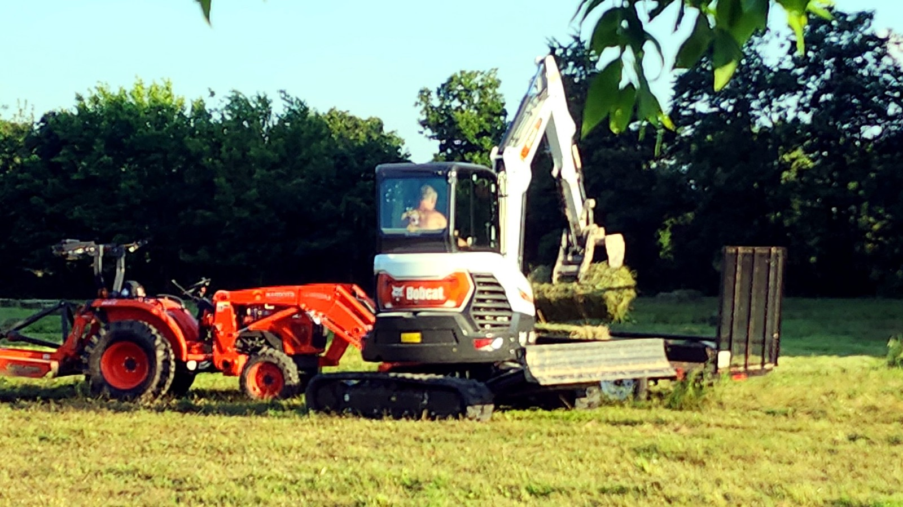

Work Gallery
Before-and-after results from real property work.
Project photos, before-and-after results, and field images from the type of land work Lil Yellow Dog Diggin handles.
Field Photos
Equipment, job sites, and progress in the field.

